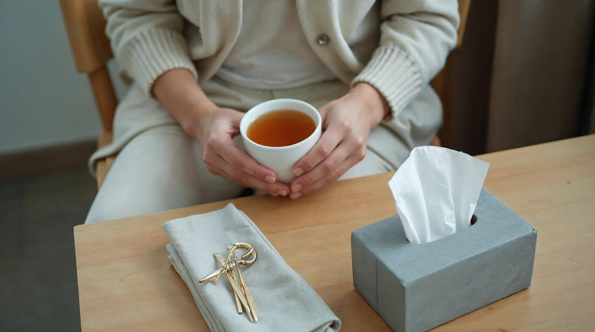
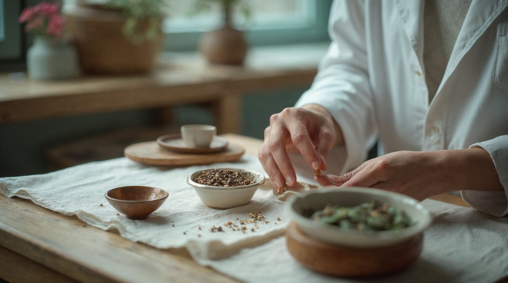
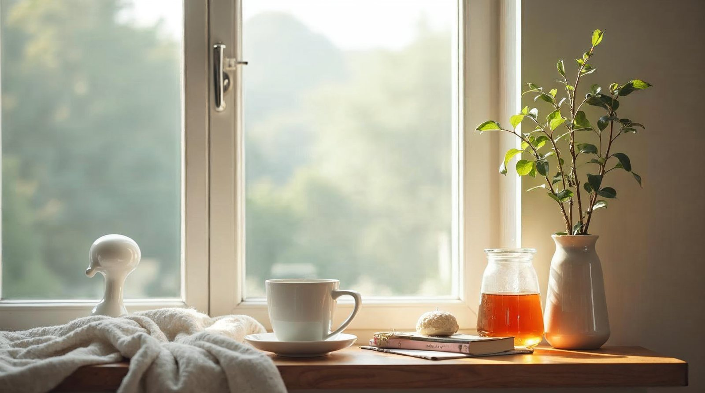

이종호 한의사 감수좋은꿈참사랑한의원 대표원장 (한의사 면허번호 19769)발행 2026-11-23 · 수정 2026-11-26
이 글의 차례
- 왜 이런 불편이 생길 수 있나요
- 왜 하필 아침에 몰려서 나올까요?
- 감기나 다른 코 질환과는 어떻게 구분하나요?
- 먼저 이렇게 여쭙니다
- 스스로 점검해 보세요
- 상황별 예시
- 일상에서 먼저 해 볼 수 있는 것
- 잠들기 전 저녁 습관도 아침 코와 이어질까요?
- 출근 준비 시간은 어떻게 버틸까요?
- 일어나는 순서를 조금 바꿔 보세요
- 침실은 어떻게 정리하면 좋을까요?
- 한의학에서는 아침 재채기를 어떻게 바라보나요?
- 낮 동안 몸의 온기는 어떻게 챙길까요?
- 한의원에서 함께 살필 수 있는 경우
- 첫 진료는 어떤 순서로 진행되나요?
- 계절마다 무엇이 달라질까요?
- 자주 하는 오해는 무엇인가요?
- 다시 오셨을 때는 무엇을 비교하나요?
- 얼마나 지켜보고 언제 상담할까요
- 이렇게 기록해 오시면 상담이 쉬워집니다
- 이런 증상은 먼저 확인이 필요합니다
아침에 일어나자마자 재채기와 맑은 콧물이 쏟아지는 것은 밤사이 침구의 먼지, 이불 밖의 찬 공기, 건조한 실내에 코가 예민하게 반응하는 경우가 많아, 침실 환경부터 점검하는 것이 첫걸음입니다. 눈 뜨자마자 재채기가 열 번씩 나오고 출근 준비 시간이 휴지와의 싸움이 되면 하루가 시작부터 지칩니다.
그런데 이런 분들께 여쭤 보면 점심 무렵에는 언제 그랬냐는 듯 멀쩡하다고 하시는 경우가 많습니다. 그래서 대수롭지 않게 넘기다가, 해마다 같은 계절이 오면 다시 아침이 괴로워지는 흐름이 되풀이됩니다.
저는 이 불편을 코 하나의 문제로만 보지 않습니다. 잠든 방의 공기, 이불과 베개, 일어나는 순간의 온도 차, 그리고 요즘 몸이 얼마나 지쳐 있는지가 함께 얽혀 있는 경우가 많기 때문입니다.
왜 이런 불편이 생길 수 있나요
- 이불과 베개의 집먼지진드기, 반려동물 털 같은 물질에 코 점막이 예민하게 반응할 수 있습니다.
- 따뜻한 이불 속에서 나와 찬 공기를 마시는 순간 재채기가 터지기도 합니다.
- 밤새 건조한 공기에 코가 마르면 아침에 더 예민해질 수 있습니다.
- 한의학에서는 몸이 차고 쉽게 지치는 경향도 코와 함께 살핍니다.
- 피곤하거나 잠이 부족한 날 코가 더 예민해진다는 분도 있습니다.
왜 하필 아침에 몰려서 나올까요?
밤 동안 우리는 몇 시간씩 같은 베개에 얼굴을 묻고 숨을 쉽니다. 침구에 쌓인 먼지와 진드기의 부스러기가 그 시간 내내 코 가까이에 있으니, 눈을 뜰 무렵이면 코 점막은 이미 잔뜩 예민해진 상태가 되기 쉽습니다.
여기에 이불 속 따뜻한 공기에서 서늘한 방 공기로 갑자기 옮겨 가는 순간이 겹칩니다. 코는 들이마신 공기를 데우고 적시는 일을 하는데, 온도 차가 크면 그 일을 감당하느라 콧물을 한꺼번에 쏟아 내기도 합니다.
또 사람의 몸은 새벽 무렵 체온이 가장 낮아졌다가 아침에 다시 올라옵니다. 몸이 차고 쉽게 지치는 분은 이 전환이 매끄럽지 않아, 일어난 직후 한동안 코가 유난히 민감하다고 느끼는 경우가 있습니다.
감기나 다른 코 질환과는 어떻게 구분하나요?
- 감기는 대개 목이 칼칼하거나 몸살 기운이 함께 오고, 일주일 안팎으로 지나갑니다. 아침 재채기는 몇 주, 몇 달씩 비슷한 시간에 반복되는 모습이 많습니다.
- 콧물이 처음부터 끝까지 물처럼 맑고 눈과 코가 함께 가렵다면 알레르기 쪽 반응을 먼저 떠올려 봅니다.
- 콧물이 누렇게 진해지고 오래 이어지면 코 주변 빈 공간(부비동) 상태를 확인해 볼 필요가 있습니다.
- 찬 공기나 강한 냄새에만 콧물이 흐르고 가려움은 거의 없다면 온도와 자극에 예민한 코일 수 있습니다.
실제로는 이 가운데 두세 가지가 섞여 있는 분이 많습니다. 그래서 이름을 하나로 정하기보다 언제, 어디서, 무엇과 함께 심해지는지를 차근차근 모아 보는 것이 도움이 됩니다.
먼저 이렇게 여쭙니다
- 재채기와 콧물이 특히 심한 계절이나 시간이 있나요?
- 침구는 얼마나 자주 세탁하시나요?
- 눈이 가렵거나 코가 막히는 증상도 함께 있나요?
- 반려동물을 키우시나요?
- 출근 준비 중에도 계속되나요, 집을 나서면 줄어드나요?
스스로 점검해 보세요
- 일어나서 30분 안에 재채기가 다섯 번 넘게 이어지는 날이 일주일에 사흘 이상인가요?
- 이불과 베갯잇을 2주 넘게 그대로 쓰는 일이 잦나요?
- 침실에 카펫, 천 소파, 인형처럼 먼지가 쌓이기 쉬운 물건이 많나요?
- 반려동물이 침대 위에서 함께 자나요?
- 아침에 휴지를 한 통 가까이 쓰는 날이 있나요?
- 잠이 부족했던 다음 날 증상이 더 심한가요?
- 손발이 차고, 찬바람을 쐬면 쉽게 으슬으슬한 편인가요?
해당하는 항목이 많다면 침실 환경과 잠, 몸의 온기를 함께 바꿔 보는 것부터 시작해 보세요.
상황별 예시
- 예를 들어 늦게까지 일하고 새벽에 잠들어 아침 7시에 겨우 일어나는 경우라면, 잠이 짧은 날과 재채기가 심한 날이 겹치는지 먼저 적어 봅니다.
- 예를 들어 반려견이 매일 침대 발치에서 자는 경우라면, 일주일만이라도 침실 문을 닫고 따로 재워 본 뒤 아침 증상을 비교해 볼 수 있습니다.
- 예를 들어 겨울에 난방을 세게 틀고 창문을 꼭 닫고 자는 경우라면, 침실 습도를 재 보고 너무 낮다면 젖은 수건이나 가습기로 맞춰 봅니다.
- 예를 들어 이사한 뒤부터 아침 콧물이 시작된 경우라면, 새집의 벽지나 오래 비어 있던 방의 먼지, 곰팡이 자국이 있는지도 함께 살핍니다.
- 예를 들어 주중에는 괜찮다가 주말 늦잠을 잔 아침에만 심한 경우라면, 평소보다 오래 베개에 얼굴을 묻고 있었던 시간과 주말 침실의 난방·환기 습관이 평일과 어떻게 다른지 비교해 봅니다.
- 예를 들어 아이와 한 침대에서 함께 자는 경우라면, 아이 인형과 담요까지 침구 세탁 목록에 넣고, 아이도 아침에 코를 자주 훌쩍이는지 함께 살펴봅니다.

일상에서 먼저 해 볼 수 있는 것
- 침구를 주 1회 뜨거운 물로 세탁하기
- 일어나자마자 따뜻한 물 한 잔 마시기
- 잠자리 주변 먼지를 젖은 걸레로 닦기
- 외출 뒤 옷을 털고 손과 얼굴 씻기
- 아침 환기는 짧게 하고, 찬 공기를 바로 들이마시지 않게 마스크로 코 가리기
잠들기 전 저녁 습관도 아침 코와 이어질까요?
아침 증상은 전날 밤에 이미 시작되는 경우가 많습니다. 늦게까지 술을 마시거나 맵고 짠 야식을 먹은 날, 코가 밤새 붓고 마르면서 다음 날 아침이 더 괴롭다는 분이 적지 않습니다.
잠들기 두세 시간 전에는 식사를 마치고, 따뜻한 물로 샤워해 코와 목을 촉촉하게 한 뒤 잠자리에 드는 것을 권합니다. 샤워 뒤 머리를 덜 말린 채 누우면 베개가 축축해져 먼지가 더 잘 붙으니 충분히 말리고 주무세요.
휴대폰을 오래 보다가 잠드는 시각이 늦어지는 것도 살펴볼 부분입니다. 잠이 짧은 날 코가 더 예민해진다는 분이 많아, 잠드는 시각을 일정하게 지키는 것도 코를 돌보는 방법이 됩니다.
출근 준비 시간은 어떻게 버틸까요?
재채기가 몰리는 아침에는 준비 순서를 조금 바꿔 보세요. 먼저 따뜻한 물을 마시고 미지근한 물로 세수한 뒤, 코를 부드럽게 풀고 나서 옷을 갈아입으면 한바탕 쏟아지는 시간이 조금 짧아진다는 분이 있습니다.
현관을 나서기 전에는 마스크나 목도리로 코를 가려 바깥 찬 공기가 한 번 데워져 들어오게 하세요. 상도역까지 걸어가는 짧은 길에서도 찬바람에 다시 재채기가 터지는 분이라면, 이 작은 차이가 생각보다 크게 느껴지기도 합니다.
가방에는 휴지와 함께 작은 물병을 챙겨 두세요. 코가 마르고 목이 칼칼해질 때 한 모금씩 마시면 오전 내내 덜 불편하다는 분이 많습니다.
일어나는 순서를 조금 바꿔 보세요
알람이 울리면 바로 이불을 걷고 일어나기보다, 이불 속에서 손발을 몇 번 오므렸다 펴며 1~2분 몸을 데우는 시간을 가져 보세요. 몸이 먼저 깨어나면 찬 공기를 마실 때의 충격이 조금 덜하다는 분이 있습니다.
머리맡에 얇은 카디건이나 목도리를 두었다가 일어나자마자 걸치는 것도 방법입니다. 목과 어깨가 따뜻하면 코도 덜 놀랍니다. 그다음 따뜻한 물을 한 잔 천천히 마시고, 세수는 미지근한 물로 하세요.
침실은 어떻게 정리하면 좋을까요?
- 베개는 커버를 자주 빨고, 베개 속도 계절마다 햇볕에 말리거나 세탁 가능한 것으로 바꾸기
- 침대 밑과 머리맡 선반처럼 손이 잘 가지 않는 곳을 일주일에 한 번 젖은 걸레로 닦기
- 침실에는 옷을 쌓아 두지 않고, 외출복은 다른 방에서 갈아입기
- 실내 습도는 40~60% 정도로 맞추고, 가습기는 자주 씻어 물때가 끼지 않게 하기
- 창가 결로나 벽 모서리 곰팡이가 보이면 먼저 닦고 환기하기
한꺼번에 다 바꾸기 어렵다면 베개 커버와 이불부터 시작해 보세요. 얼굴이 가장 오래 닿는 곳이 가장 먼저입니다.
한의학에서는 아침 재채기를 어떻게 바라보나요?
한의학에서는 맑은 콧물이 쉽게 흐르고 찬 기운에 예민한 모습을 몸의 온기가 부족한 경향과 연결해 살피는 경우가 많습니다. 그래서 코만 보지 않고 손발이 찬지, 쉽게 피곤한지, 아침에 입맛이 있는지도 함께 여쭙니다.
대표원장은 잘 먹고, 잘 싸고, 잘 자고, 마음 편하고, 몸 따뜻하게, 이 다섯 가지를 몸이 회복하는 바탕으로 봅니다. 아침 코 증상으로 오신 분께도 잠과 온기를 빠짐없이 여쭙는 것은 이 바탕이 어디서 흔들렸는지 찾기 위해서입니다.
낮 동안 몸의 온기는 어떻게 챙길까요?
아침 코가 예민한 분 가운데는 하루 종일 찬 음료를 달고 사는 분이 많습니다. 사무실에서 얼음 커피를 몇 잔씩 마시고, 점심도 차가운 음식으로 간단히 넘기는 날이 이어지면 몸이 차게 식는 느낌을 받기 쉽습니다.
찬 음료를 하루 한 잔쯤은 따뜻한 물이나 보리차로 바꿔 보세요. 점심에는 국이나 따뜻한 반찬을 곁들이고, 에어컨이나 난방 바람이 바로 닿는 자리라면 얇은 겉옷을 의자에 걸어 두는 것도 좋습니다.
저녁에 20~30분 가볍게 걷는 것도 권합니다. 땀이 살짝 날 정도로 몸을 데우고 들어와 따뜻하게 씻으면 잠도 편하고, 다음 날 아침 코가 덜 놀랐다는 분이 있습니다.

한의원에서 함께 살필 수 있는 경우
- 아침 코 증상이 반복되는 경우 코 상태와 함께 몸이 차거나 쉽게 지치는 편인지 살핍니다.
- 코막힘 때문에 잠을 설치는 경우 잠의 질을 함께 살핍니다.
- 찬 공기에 예민한 경우 생활 환경을 함께 점검합니다.
좋은꿈참사랑한의원에서는 모든 분께 그렇듯 맥부터 짚으며 증상이 심한 시간과 침실 환경을 여쭙고, 필요하면 혀(설진)도 살핀 뒤 침이나 한약 상담 등 상태에 맞는 방법을 정합니다. 귀가 전에는 집에서 바꿔 볼 환경을 정리해 드립니다.
알레르기약이나 코 스프레이를 쓰고 계신다면 이름을 알려 주세요. 쓰던 약은 처방한 의사와 상의 없이 끊지 마시고, 한약 상담도 지금 쓰는 약을 확인한 뒤에 진행합니다. 임신 중이거나 임신을 준비 중이라면 먼저 말씀해 주시고 산부인과와도 상의해 주세요.
첫 진료는 어떤 순서로 진행되나요?
- 모든 분의 맥을 먼저 짚고, 아침 증상이 시작된 시기와 심한 계절을 듣습니다.
- 침실 환경, 침구 관리, 반려동물, 난방과 습도를 차례로 여쭙니다.
- 잠든 시간과 일어난 시간, 손발의 온기, 소화와 대변 상태를 함께 확인합니다.
- 쓰고 있는 약과 받은 검사 결과를 본 뒤 상태에 맞는 방법을 정하고, 다음 진료까지 바꿔 볼 것과 기록할 것을 함께 정합니다.
계절마다 무엇이 달라질까요?
봄과 가을 환절기에는 아침저녁 기온 차가 커지고 꽃가루나 바깥 먼지가 늘어, 창문을 열어 두고 잔 다음 날 더 심하다는 분이 많습니다. 이 시기에는 자기 전 창문을 닫고, 환기는 해가 오른 낮에 하는 쪽으로 바꿔 보세요.
겨울에는 난방 때문에 침실이 건조해지고 이불을 두껍게 덮다 보니, 이불 속과 방 공기의 온도 차가 더 커집니다. 습도를 맞추고 머리맡에 걸칠 옷을 두는 것이 이 계절에 특히 도움이 됩니다.
여름에는 에어컨 바람이 밤새 얼굴로 바로 오지 않게 방향을 바꾸고, 필터를 자주 씻는 것만으로도 아침 코가 덜 예민하다는 분이 있습니다.
자주 하는 오해는 무엇인가요?
- 콧물을 세게 풀어야 빨리 멎는다는 생각: 한쪽씩 부드럽게 풀어야 코와 귀에 부담이 덜합니다. 세게 풀면 코 안이 더 붓기도 합니다.
- 공기청정기만 있으면 된다는 생각: 공기 중 먼지는 줄일 수 있어도, 얼굴이 밤새 닿는 베개와 이불은 따로 빨아야 합니다.
- 아침에만 그러니 그냥 두어도 된다는 생각: 몇 년씩 반복되면 코막힘이 밤잠까지 흔들어 낮의 피로로 이어지는 경우도 있어, 흐름을 한 번 살펴 두는 것이 좋습니다.
다시 오셨을 때는 무엇을 비교하나요?
두 번째 진료부터는 다시 맥을 짚고 그사이 적어 오신 아침 기록을 함께 봅니다. 재채기 횟수와 휴지 쓰는 양, 코막힘으로 깬 밤이 어떻게 달라졌는지, 침구를 바꾼 주와 그렇지 않은 주에 차이가 있었는지를 나눠 여쭙니다.
바꾼 습관 가운데 도움이 됐다고 느낀 것과 지키기 어려웠던 것을 구분해 듣고, 다음 몇 주 동안 이어 갈 것을 다시 정합니다. 계절이 바뀌는 무렵이라면 그 계절에 맞춰 신경 쓸 점도 함께 짚어 드립니다.
얼마나 지켜보고 언제 상담할까요
침구와 침실 습도, 일어나는 순서를 바꾼 뒤 2~3주 정도는 아침마다 재채기 횟수를 적어 보세요. 바꾼 습관이 맞는지 보려면 하루 이틀로는 판단하기 어렵습니다.
특히 침구는 빨래를 한 첫 주보다 두세 주를 꾸준히 이어 갔을 때 차이를 느끼는 분이 많으니, 조금 길게 보고 같은 방식으로 적어 주세요. 중간에 감기를 앓았던 날은 따로 표시해 두면 비교가 쉬워집니다.
그래도 출근 준비가 어려울 만큼 반복되거나, 코막힘으로 밤잠까지 설친다면 상담을 받아 보시기를 권합니다.

이렇게 기록해 오시면 상담이 쉬워집니다
- 재채기와 콧물이 심한 시간대와 계절
- 침구 세탁 주기와 반려동물 여부
- 쓰고 있는 코 스프레이나 알레르기약 이름
- 코막힘으로 잠에서 깬 횟수
- 눈 가려움이 함께 있었던 날
기록은 거창하지 않아도 됩니다. 휴대폰 메모에 '7시 기상, 재채기 8번, 휴지 많이, 어젯밤 1시 취침'처럼 한 줄씩만 남겨도, 두세 주가 모이면 어떤 날 심해지는지 흐름이 보이기 시작합니다.
아침마다 휴지를 찾느라 허둥대는 시간이 조금씩 줄어들도록, 오시면 가장 괴로웠던 날의 아침부터 함께 짚어 보겠습니다.
이런 증상은 먼저 확인이 필요합니다
- 한쪽 코에서만 피 섞인 콧물이 계속 나오는 경우
- 코막힘과 함께 얼굴이 붓고 열이 나는 경우
이런 신호가 있으면 한의원보다 가까운 병원이나 응급실을 먼저 찾으세요.

여쭙는 것
- 재채기와 콧물이 특히 심한 계절이나 시간이 있나요?
- 침구는 얼마나 자주 세탁하시나요?
- 눈이 가렵거나 코가 막히는 증상도 함께 있나요?
생활에서 해 볼 것
- 침구를 주 1회 뜨거운 물로 세탁하기
- 일어나자마자 따뜻한 물 한 잔 마시기
- 잠자리 주변 먼지를 젖은 걸레로 닦기
한의원에서 함께 살필 것
- 아침 코 증상이 반복되는 경우 코 상태와 함께 몸이 차거나 쉽게 지치는 편인지 살핍…
- 코막힘 때문에 잠을 설치는 경우 잠의 질을 함께 살핍니다.
- 찬 공기에 예민한 경우 생활 환경을 함께 점검합니다.
먼저 확인이 필요한 신호
- 한쪽 코에서만 피 섞인 콧물이 계속 나오는 경우
- 코막힘과 함께 얼굴이 붓고 열이 나는 경우
한눈에 보는 표
| 구분 | 핵심 |
|---|---|
| 여쭙는 것 | 재채기와 콧물이 특히 심한 계절이나 시간이 있나요? 침구는 얼마나 자주 세탁하시나요? |
| 생활에서 해 볼 것 | 침구를 주 1회 뜨거운 물로 세탁하기 일어나자마자 따뜻한 물 한 잔 마시기 |
| 한의원에서 함께 살필 것 | 아침 코 증상이 반복되는 경우 코 상태와 함께 몸이 차거나 쉽게 지치는 편인지 살핍니다. 코막힘 때문에 잠을 설치는 경우 잠의 질을 함께 살핍니다. |
| 먼저 확인이 필요한 신호 | 한쪽 코에서만 피 섞인 콧물이 계속 나오는 경우 코막힘과 함께 얼굴이 붓고 열이 나는 경우 |
자주 묻는 질문
공기청정기가 도움이 되나요?
먼지가 많은 환경이라면 도움이 될 수 있지만, 침구 관리와 환기를 함께 하는 것이 좋습니다.
코 스프레이를 오래 써도 되나요?
종류에 따라 오래 쓰면 안 되는 제품도 있어 처방한 의사나 약사와 상의하세요.
평일 아침에는 시간이 없는데 주말에 가도 되나요?
토·일·공휴일에도 09:30~15:00에 진료합니다. 방문 전 전화(02-815-7510)로 확인해 주세요.
알레르기 검사를 받아야 하나요?
원인 물질을 알고 싶다면 이비인후과나 내과 검사가 도움이 될 수 있습니다. 받은 결과가 있다면 가져와 주세요.
찬물 세수가 코를 단련시킨다는 말이 있던데요?
아침에 이미 예민해진 코에는 찬물이 오히려 재채기를 부르기도 합니다. 미지근한 물로 세수하고, 몸이 먼저 데워진 뒤 바깥 공기를 마시는 순서를 권합니다.
좋은꿈참사랑한의원은 재진 때 지난번 이야기부터 이어서 여쭙니다. 진료시간과 예약은 오시는 길에서 확인하세요.
어디서 상담받을 수 있나요?
좋은꿈참사랑한의원은 서울 동작구 만양로2길 2 신성빌딩 3층·5층(서울 동작구 상도동, 7호선 상도역 3번 출구 근처)에 있습니다. 한의사 3명(이종호 대표원장, 조영기 수석진료원장, 정원영 진료원장)이 진료합니다. 진료시간은 평일 09:30~20:00(점심 13:00~14:00), 토·일·공휴일 09:30~15:00이며, 방문 전 전화로 확인을 권합니다. 예약은 네이버 예약, 카카오톡 상담, 전화 02-815-7510로 받습니다.
이 글은 일반적인 건강 정보이며 개인의 진단이나 치료를 대신하지 않습니다. 증상이 있거나 복용 중인 약이 있다면 진료를 통해 확인하세요. 치료 효과는 개인마다 다를 수 있습니다.
작성 기준: 일반적으로 알려져 있는 건강 정보를 참고해 정리했습니다(대표원장 감수). 증상 기록은 1~2주 동안 하루 1회, 비슷한 시간에 적어 오시면 지난 상태와 비교하기 쉽습니다.